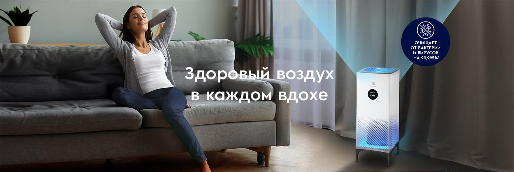
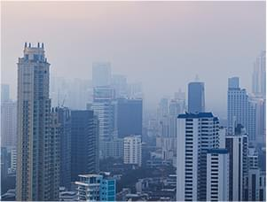
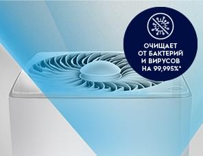
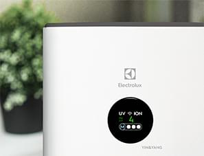
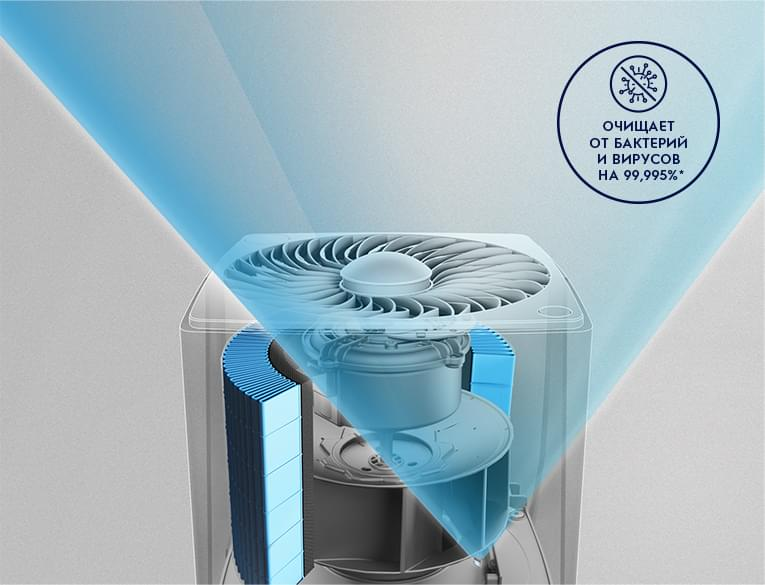
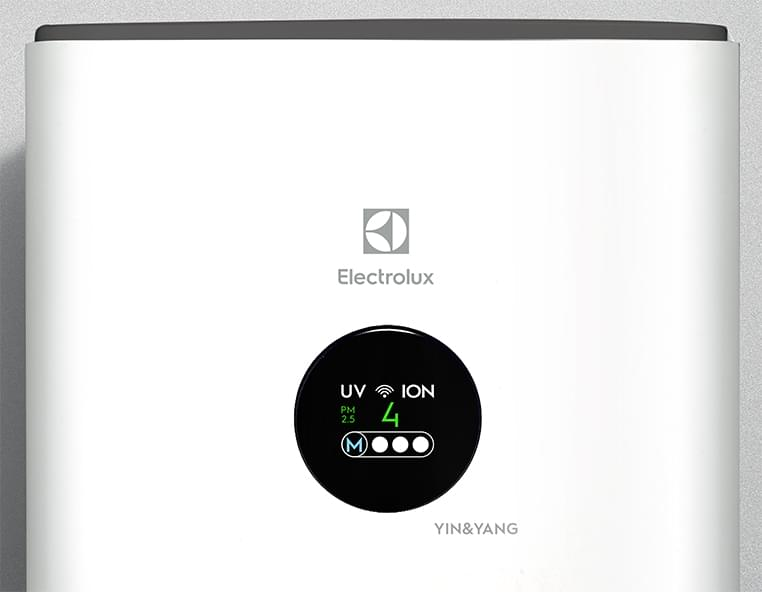
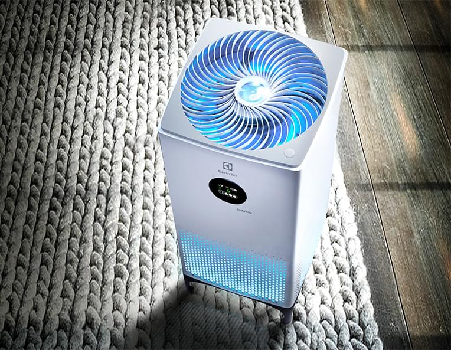
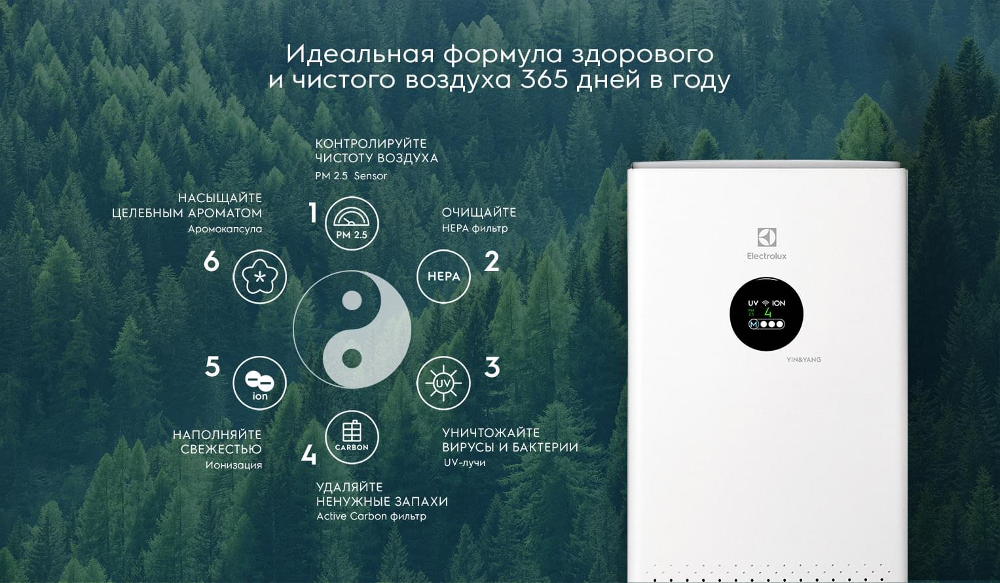

Инновационные решения, делают очистители воздуха Electrolux максимально эффективными помощниками для создания комфортной и здоровой среды в доме круглый год.

10 000 литров воздуха в сутки проходит через наши лёгкие, но вместе с ним в наш организм попадают мелкие частицы пыли, продукты выхлопа от автомобилей, аллергены и опасные микрочастицы PM2.5. На улицах больших городов воздух загрязнен, а бытовая вентиляция и проветривание не делают его чище. Electrolux предлагает решения, с помощью которых вы создадите для себя и близких здоровую атмосферу.

Защита себя и окружающих от болезнетворных микроорганизмов становится неотъемлемой частью привычной жизни. Источником инфекции может быть не только больной, но и бессимптомный носитель. Многоуровневая очистка и обеззараживание воздуха УФ-лучами защитит вас и ваших близких от негативного воздействия окружающей среды изо дня в день.

Автоматические и индивидуальные режимы в очистителе Yin&Yang позволяют создать правильные условия и здоровый микроклимат в доме. Оснащенный датчиком обнаружения частиц РМ 2.5 прибор ведет непрерывный мониторинг качества воздуха в помещении и при необходимости запускает эффективный режим очищения от опасных невидимых частиц, вирусов, аллергенов и бактерий.

Многоуровневая система очистки и обеззараживания воздуха 360°ROUND CLEAN помогает защищать иммунитет в течение всего года:

Воздухоочиститель Yin&Yang знает, как сделать воздух чистым.
Автоматические и индивидуальные режимы позволяют быстро создать правильные условия для здоровой жизни:

Широкий выбор режимов и настроек обеспечит лучший комфорт и настраивается во все потребности в доме:

Управлять микроклиматом можно из любой точки мира с помощью мобильного устройства. Загрузите специальное приложение и установите соединение с Wi-Fi. Пользуйтесь современными технологиями для заботы о себе и близких.